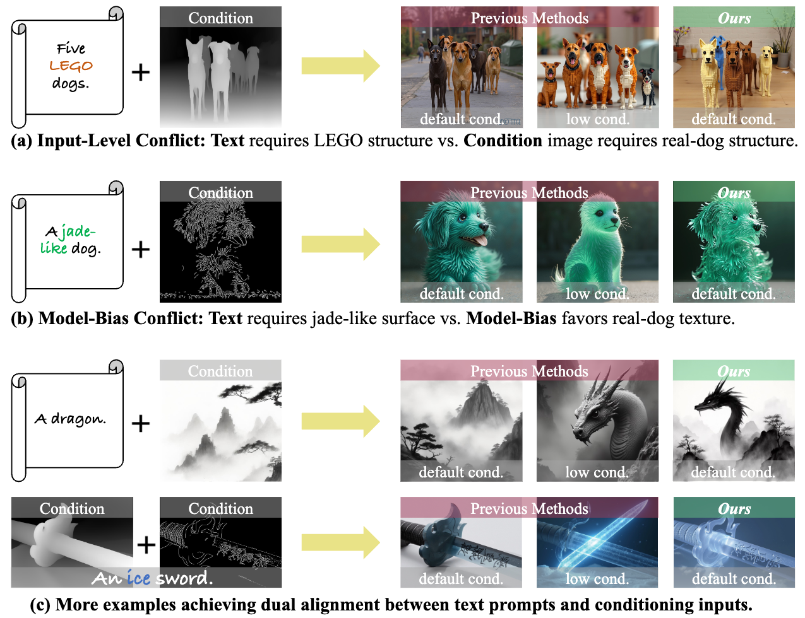
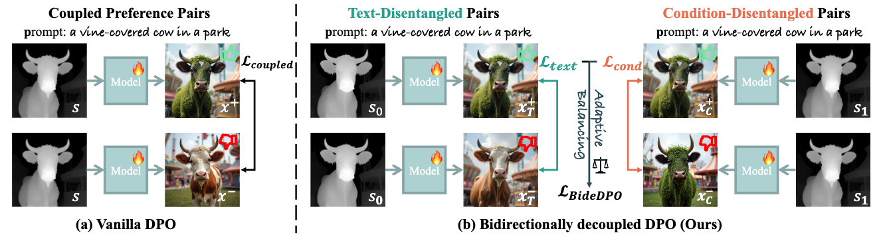
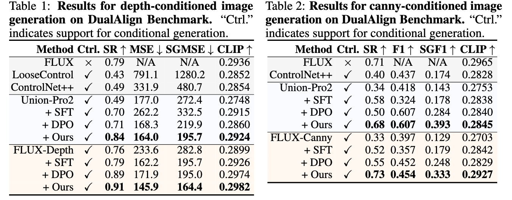
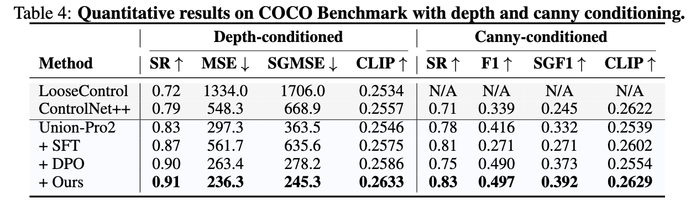
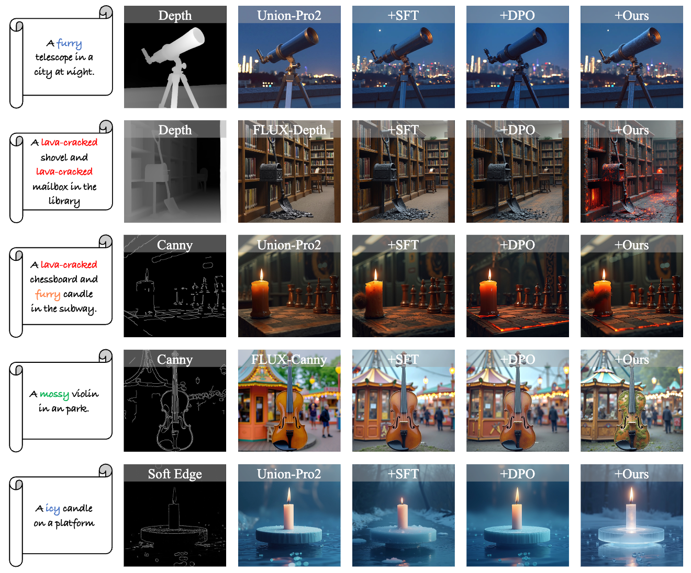

01 / Problem
Conflicting guidance
Text and condition signals may disagree at the input level, while learned model bias can create conflicts even when those inputs are compatible.
Text
Condition
Resolve competing text and visual constraints by decoupling their preference signals, then balancing them as the model learns.
1Zhejiang University 2Harvard University 3Huawei Technologies Ltd., China ✉Corresponding author

The alignment problem
Conditional generators must respect what the prompt asks for and what the visual condition specifies. BideDPO turns that competition into an explicit, controllable optimization process.
01 / Problem
Text and condition signals may disagree at the input level, while learned model bias can create conflicts even when those inputs are compatible.
02 / Insight
Separate preference pairs isolate text alignment from condition alignment, preventing the two learning signals from becoming entangled.
03 / Resolution
Adaptive weighting coordinates both objectives, while an iterative VLM-checked data pipeline progressively improves the model and its training pairs.
Abstract
BideDPO is a self-driven, bidirectionally decoupled DPO framework for resolving conflict in conditional image generation.
Conditional image generation augments text-to-image synthesis with structural, spatial, or stylistic priors. Current methods, however, struggle to harmonize both guidance sources when conflicts arise: input-level conflict, where the conditioning image contradicts the prompt, and model-bias conflict, where learned generative biases hinder alignment even when the inputs are compatible.
Naive DPO entangles gradients from text and condition signals and lacks conflict-aware preference data. BideDPO constructs two disentangled preference pairs for each sample, one for the condition and one for the text, and coordinates their influence through Adaptive Loss Balancing.
An automated pipeline with VLM checks produces conflict-aware data inside an iterative optimization process. The resulting model improves both text success and condition adherence on the new DualAlign benchmark, with robustness validated on COCO.
Method
The framework separates the two alignment objectives, coordinates their contribution, and improves its training signal through iteration.

Generate conflict-aware, disentangled preference pairs and verify them through VLM checks.
Learn text and condition alignment independently, then balance their losses adaptively.
Use the improved model to refine the data and repeat the optimization cycle.
Results
BideDPO improves text success while retaining condition adherence across conflict-focused and general-domain evaluation.
A conflict-focused benchmark that evaluates text success and condition adherence together.

General-domain evaluation verifies that stronger conflict resolution does not compromise standard conditional alignment.

Qualitative comparison
Across diverse conflicts, BideDPO follows the requested text semantics without discarding the visual condition.

Citation
If this work supports your research, please cite the paper using the BibTeX entry.
@inproceedings{
zhou2026bidedpo,
title={Bide{DPO}: Conditional Image Generation with Simultaneous Text and Condition Alignment},
author={Dewei Zhou and Mingwei Li and Zongxin Yang and Yu Lu and Yunqiu Xu and Zhizhong Wang and Zeyi Huang and Yi Yang},
booktitle={The Fourteenth International Conference on Learning Representations},
year={2026},
url={https://openreview.net/forum?id=DNBlGOsIxn}
}